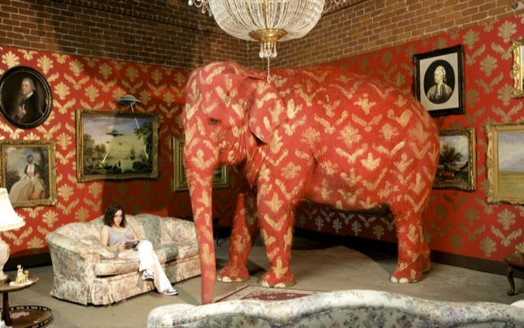
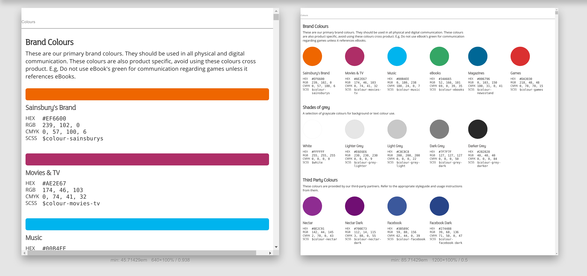

Designing for the web
Healthy practices for developers and designers
by
Matteo Pescarin
smartart.it - @ilPeach
Digital Croydon - 11 May 2017
State of the Browser 6
The rise of the Browsers
Saturday 16 September 2017
A bit about myself
Lead engineer at BuildIt
Blogging on blog.smartart.it
@ilPeach on Twitter
I've seen things you people wouldn't believe
A brief history the Web
the very first steps...
HTML, <img>s and <table>s
Enters the Web Designer
With HTML 3.2 (1995) it became possible to set fonts, colors, place backgrounds behind your text and many other elements of presentation.
Then CSS 1 (1996) and CSS 2 (1998)
Reccomended reading:
resilientwebdesign.com by Jeremy Keith
New horizons
content-first approaches, personas, user journeys, interactions and behaviours, usability, cross-device compatiliby, and many other aspects
Web Design == Product Design
-- Andy Rutledge 2011The flipside of the coin
Web Design != Graphic Design
Visuals are only a (small) part of the picture

With great power...

almost...
Tricky questions
What's the difference between
<article> and <section>?
How do you vertically align
a BLOCK element using only CSS?

If developers have too much to take in...

what should designers do?


Stop banging your head
Obvious solution
The best of the two worlds
developers and designers are masters in their field.
Let's talk about the elephant in the room
Designers must sit with developers
Promote knowledge sharing and upskilling
Leverage on each other's knwoledge
Don't expect to find the unicorn

Don't expect Tools to solve your problems

Don't let anybody decide
which tools you should be using.
Allow yourself to be flexible enough
to experiment and try new things.
A better world is possible
What have we learnt so far?
What can we do to improve things?
1-10-100 rule
Although 100 is more like in the order of 1.000.000
Iterate and validate
Always try to find room for improvement
Learn from mistakes
& remove obstacles as quickly as possible
Involve your users
they hold the key for fine-tuning your user experience
Designing in the browser & Rapid Prototyping

choose the right level of fidelity
Related Smashing article: Design Better And Faster With Rapid Prototyping By Lyndon Cerejo
Design Sprints

Very quick (5 days) iteration process for discovering new features or brainstorming new ideas.
Use Style Guides & Pattern Libraries
This is cool but...
Don't panic!
Work bottom-up
Work top-down
To keep it simple

Thank you!
...questions?
Find me on Twitter as @ilPeach or on blog.smartart.it.